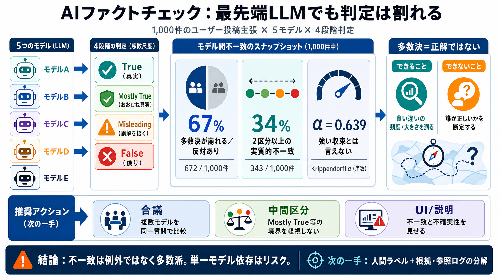

対象データ
事実確認プラットフォームの
ユーザー投稿主張 1,000件
判定設計
公開の正解ラベルなし
“モデル間ズレ”を測定
as-of: 2026-05-21 / v1.0（提示本文に基づく要約）

事実確認プラットフォームの
ユーザー投稿主張 1,000件
公開の正解ラベルなし
“モデル間ズレ”を測定
4区分のうち
1つだけが正しいと仮定
正解ラベルなしで
“モデル間不一致”を定量化
672 / 1,000 =
67%
単一モデル出力を
そのまま“判定”にできない頻度が高い
343 / 1,000 =
34%
解釈・根拠・時間条件付け（as-of）などが
絡む可能性
α（序数）
0.639
“全くの雑音”ではない
“同じ結論に収束”とも言えない
5 / 5
328 / 1,000
同じ方向でも、最終区分が
中心で収束しにくい可能性
GPT-5.4 / Claudeなどが
True/False側へ寄りがち
Gemini系が
中間・極端への出方が異なる
Gemini + Search / Sonar Proでも
合意が常に強まるとは限らない
“食い違い”の大きさ・頻度を測る
“誰が正しいか”を断定する
複数モデル出力を
“同一質問”で比較
Mostly True等の
境界域を軽視しない
不一致を前提に
説明可能な出し方にする
正解ラベルなし
→「誤り特定」ができない
人間ラベルによるフォローアップ
＋根拠・参照ログの分解
不一致は例外ではなく多数派
合議・中間扱い・不確実性UIを設計
No references found